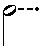

It has long irked me that some beats are easily notated, but not others. How we notate music in part informs how we compose music*, so deficiencies in our notation system get translated into limitations in the composed and performed music itself.
A quarter note is easy. A note equal to a quarter plus an eighth is easy too: just add a dot. Add two dots for a quarter plus an eighth plus a sixteenth.
To illustrate, let me use binary notation to represent common note values. A whole note is of course notated with the number 1, a half note by 0.1 (a 1 in the halfs place), a quarter by 0.01 (a 1 in the quarters place), etc.:
| Note | Binary equivalent | Dotted | Double-dotted | Triple-dotted |
|---|---|---|---|---|
| Whole | 1 | 1.1 | 1.11 | 1.111 |
| Half | 0.1 | 0.11 | 0.111 | 0.1111 |
| Quarter | 0.01 | 0.011 | 0.0111 | 0.01111 |
| Eighth | 0.001 | 0.0011 | 0.00111 | 0.001111 |
| Sixteenth | 0.0001 | 0.00011 | 0.000111 | 0.0001111 |
| Thirty-second | 0.00001 | 0.000011 | 0.0000111 | 0.00001111 |
Looks like a pretty complete list, doesn't it? Now let's look at the same range of notes, to 32nd note granularity (five decimal places in binary notation), in order from 0 to 1:
| Note | Binary notation |
|---|---|
| Thirty-second | 0.00001 |
| Sixteenth | 0.00010 |
| Dotted sixteenth | 0.00011 |
| Eighth | 0.00100 |
| unnotatable (=5/32) | 0.00101 |
| Dotted eighth | 0.00110 |
| Double-dotted eighth | 0.00111 |
| Quarter | 0.01000 |
| unnotatable (=9/32) | 0.01001 |
| unnotatable (=5/16) | 0.01010 |
| unnotatable (=11/32) | 0.01011 |
| Dotted quarter | 0.01100 |
| unnotatable (=13/32) | 0.01101 |
| Double-dotted quarter | 0.01110 |
| Triple-dotted quarter | 0.01111 |
| Half | 0.10000 |
| unnotatable (=17/32) | 0.10001 |
| unnotatable (=9/16) | 0.10010 |
| unnotatable (=19/32) | 0.10011 |
| unnotatable (=5/8) | 0.10100 |
| unnotatable (=21/32) | 0.10101 |
| unnotatable (=11/16) | 0.10110 |
| unnotatable (=23/32) | 0.10111 |
| Dotted half | 0.11000 |
| unnotatable (=25/32) | 0.11001 |
| unnotatable (=13/16) | 0.11010 |
| unnotatable (=27/32) | 0.11011 |
| Double-dotted half | 0.11100 |
| unnotatable (=29/32) | 0.11101 |
| Triple-dotted half | 0.11110 |
| Quadruple-dotted half | 0.11111 |
| Whole | 1.00000 |
Fully half of the possible note lengths to the nearest 32nd note are missing from the current system. For all those you must use a tie to add two or more smaller notes together. I readily admit that tied notes often reduce ambiguity and help the reader find the beat, but this is not universally the case, especially in modern music featuring more complicated beat durations. Why, for example, is a note made of 15 sixteenths notatable with a single note in the current system, but not 9 sixteenths?
What's needed is place notation for dots. Unsurprisingly, I've called it "Dot Place Notation". For example, I ought to be able to create a hypothetical note made of a quarter and a sixteenth by adding an empty placeholder after the quarter note (standing in for the first eighth-note dot), and putting a normal sixteenth-note dot following it, just like you saw in binary notation.
How would that look? If I use a dash where I need a dot placeholder, something like this:
| Old notation | Equivalent | New notation | How to read it |
|---|---|---|---|
| 5 eighth notes | 1 half note
+ 0 quarter notes + 1 eighth note |
||
| 9 sixteenth notes |  | 1 half note
+ 0 quarter notes + 0 eighth notes + 1 sixteenth note |
|
| 11 sixteenth notes | 1 half note
+ 0 quarter notes + 1 eighth note + 1 sixteenth note |
||
| 13 sixteenth notes | 1 half note
+ 1 quarter note + 0 eighth notes + 1 sixteenth note |
Musicians are already used to reading an ordered line of dots in place of note values, so I think the addition of a placeholder would be trivially easy to learn. My only difficulty was deciding what symbol to use as the placeholder. Although a rhythmic dash might be confused with marcato, musicians seem to have no trouble distinguishing rhythmic dots from staccatos, and at least a dash suggests mathematical subtraction, which is close to the "zero" or "absent" meaning of the symbol in its new context. Reading the new notation becomes a little like reading Morse code2.
This innovation will still be of only limited use unless time signatures change as well, to accommodate the newly-available rhythms. Having taught music theory, I know that trying to teach the difference between simple and compound time signatures is difficult. Why, for example, would a time signature with 2 beats have a 6 on the top, as in the case of 6/4?
The problem with traditional time signatures is that they are NOT simple mathematical fractions, although they look similar. The top number isn't just the number of beats, but the product of the number of beats and the number of pulses per beat. It only looks like the simple number of beats when the number of pulses per beat is 1, as happens in any time signature with beats of half notes, quarters, eighths, and so on. The time signature 4/4 isn't a simple fraction; it's really 4 * ¼, but you can ignore the 1.
This fact is better illustrated in compound time. To take my first example, 6/4 is really 2 * (3/4), that is, 2 beats, each being 3 quarter notes long. 9/8 is really 3 * (3/8). 12/16 is really 4 * (3/16).
We can get away from confusing bunches of numbers like those, though, by either using the new place notation with the beat designator, or replacing the beat designator with a picture of the note. For example:
| Old | New using numeral as denominator | New using note as denominator |
|---|---|---|
| Two dotted quarter notes. | ||
| In this case, probably context is good enough to supply my intended grouping using traditional notation, but the new notation makes it explicit. | ||
| Another possibility is if I used multiple, but traditional, time signatures, like this: An example of this might be the second variation in my Theme and Variations. | ||
| Traditional interpretation of 15/8, as a compound time signature with 5 beats, each beat containing 3 pulses | ||
| However, this is the grouping used by Alexander Scriabin in his Prelude Op. 11, No. 14: three beats per bar, each beat with five eighth notes. I also use it in my Drunk Detective Show Theme. Traditional time signatures can't make this sort of distinction. | ||
| Four dash-dotted quarter notes, as used in my piece FiveBeat, or for example in one section of Thinking Plague's Blown Apart. | ||
| Five dash-dotted quarter notes followed by one (or two or three) dotted eighths, as used in my piece Engagement (hear a sample). This sort of rhythm is almost completely unreadable using traditional notation. | ||
Have a look at this piano piece - part of the fifth variation in my Train Variations (cowritten with Gordon Rumson) - to see dash-dotted notes in context.
Let's look at an even more complicated example. Numbers in time signatures are only useful if you have two or more contiguous beats of a given type. How does one meaningfully notate regular patterns of changing beat lengths?
I think the simplest way would be to dispense with numbers entirely, and just write the note types: for example, instead of using "27/16" to indicate a complex rhythm with a repeated 13 + 14 inner structure, use
to display the repeating units. The difference between the two bars is instantly visible using the new notation: the second bar is merely one sixteenth note longer than the first. These two bar-sized beats might further be subdivided for greater accuracy in a similar fashion if desired.
Once one begins to become familiar with the patterns of dot place notation, it becomes easy to understand the beat structure of fascinating music such as this. I don't find associating dash dotted note
with 5
, for example, any more difficult or arbitrary than associating double dotted note
with 7
.
Not surprisingly, you can even do note arithmetic, once all the dots line up. Here are the rules for adding one note to another to get a combined value (essentially the rules for binary addition):
Here's an example: try adding a triple-dotted half note to a dash-dotted quarter note. Line the quarter note up with the first dot on the half note, and apply the rules above.
If you can add, you can multiply. Multiplication of any kind of note by powers of two (2, 4, 8, 16, etc.) is easy: just change the note value and the dots and placeholders take care of themselves. For example, four dash-dotted quarters equals one dash-dotted whole note.
But how can one figure out, for example, what note will fill a bar made up of eleven notes, each of which is a dash-dotted eighth? Write the dash-dotted eighth note at the top, and write the multiplicator 11 as its binary equivalent
• – • •
(or, if you prefer, a dash-double-dotted note), making sure that the rightmost character (dot in this case) lines up with the rightmost dot on the top line.
(If one was multiplying by an even number, the rightmost character would be a dash, lined up in similar fashion, e.g. multiply by 6 by putting
• • –
on the second line.)
Fortunately, this is easier than standard decimal multiplication. For each dot on the second line, write the top line, lining up the rightmost dot on the top line with the dot on the second line, like this:
• – • • •
How does one figure out what value to give the leftmost note? By keeping the dots aligned. The third column from the right is the eighth-note column, so by counting left one gets a dash in the quarter's place, a dot in the half's place, and a dot in the whole note's place. Only the leftmost dot gets written as a note; the rest remain as dots or placeholders.
I am not arguing against the use of ties and time signatures in traditional ways. However, the traditional notation is also a straitjacket, forcing composers to think of beats in terms of "simple" or "compound" to the exclusion of other possibilities. Furthermore, expanding the possible ways in which time signatures are written, and adding place notation for dotted notes and rests, would make performing and notating some modern pieces much easier. It would free the performer from having to read exhaustively tied collections of notes, making possible the notating of durations to any arbitrary precision. Scores would be easier to read, and students would understand time signatures much faster, and be able to use difficult ones with almost as much facility as the traditional ones.
I intend to compose pieces making full use of my new system of notation, thus ensuring that I remain obscure and unsung.
This page updated 22 January 2017.